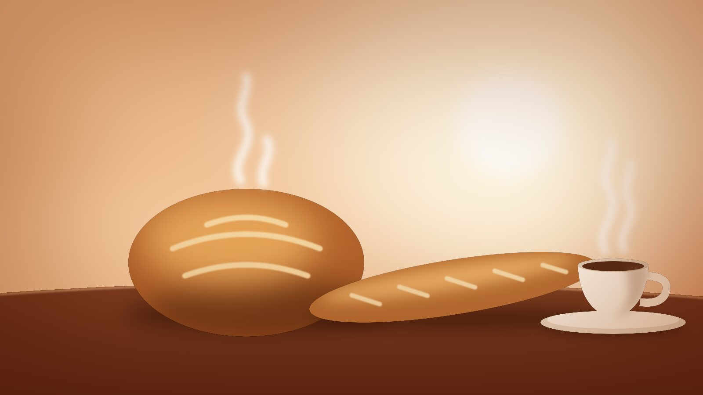

Daily
Naturally leavened bread
Country loaves, seeded rye and our harbour white, built on a starter we have fed every day for fifteen years.
Open today from 7am on Wharf Lane
We are a small neighbourhood bakery by the harbour. Our sourdough rests for 36 hours, our croissants are folded by hand, and the coffee is roasted two streets away.

What we bake
No shortcuts and no premixes. Flour, water, salt, butter and time, handled by people who care how it turns out.
Country loaves, seeded rye and our harbour white, built on a starter we have fed every day for fifteen years.
Croissants, morning buns and fruit danishes, rolled with cultured butter and baked in small batches all day.
Espresso, filter and seasonal specials from Tidewater Roasters, with oat and whole milk from a farm up the coast.
This week’s favourites
Kind words
The country loaf is the best bread I have eaten outside of France, and the staff remember my order after two visits.
We order the weekend box every Friday. The cardamom buns never make it home intact, and I have stopped apologising for that.
A proper flat white, a warm croissant and a window seat over the boats. My favourite twenty minutes of the week.
Our story
Harbor Bakery opened in 2009 in a former net loft on Wharf Lane. Founder Elsie Moreau baked forty loaves a day and sold them from a trestle table by the door.
Fifteen years on there are eleven of us, the trestle table is still here, and we still mill some of our rye in the back room.
A country loaf, four pastries and a bag of house coffee, ready for pickup on Saturday morning.